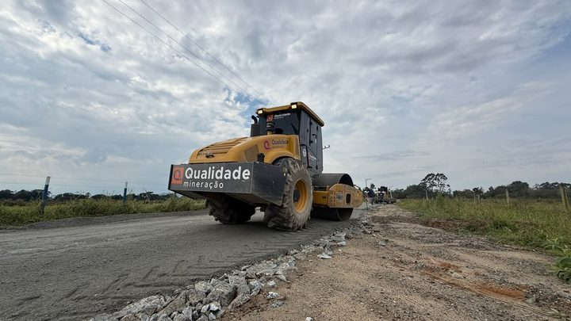
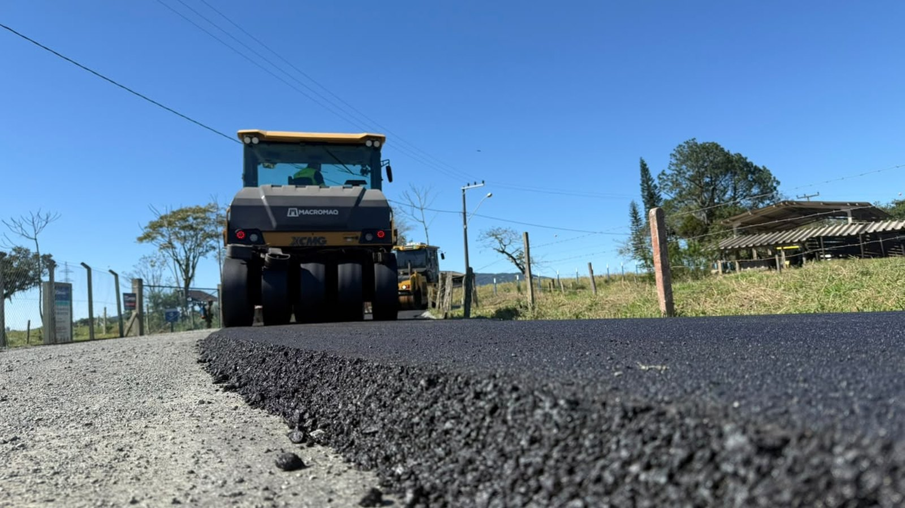
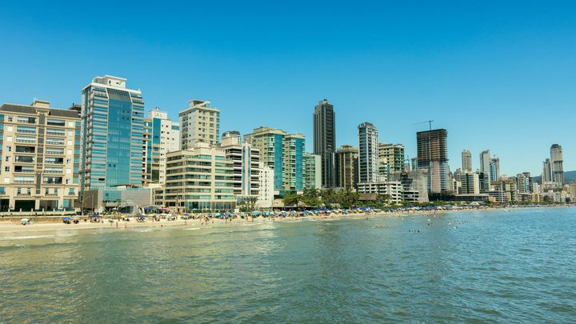

Itapema · InfraestruturaAvança Itapema abre frentes em novas ruas, com pavimentação, calçada e drenagem
As outras ruas do município que estão na fila do mesmo programa.
A obra é do Avança Itapema e sai em pedaços, com preparo do solo antes de cada aplicação. A Prefeitura não divulgou custo, empresa nem data para terminar.
Em 30 segundos · Modo de Leitura, formato original Santa Informa
A Prefeitura de Itapema informou nesta sexta-feira que a pavimentação asfáltica no Sertão do Trombudo já soma quase 2 quilômetros executados.
A obra é do programa Avança Itapema e acontece na Estrada Geral, principal via da comunidade.
Antes de cada aplicação de asfalto, o trecho passa por preparação e adequação do solo.
Os trabalhos são gradativos e avançam por pontos diferentes da estrada, não de uma vez só.
A Estrada Geral do Sertão do Trombudo é uma das ligações entre Itapema e Porto Belo, usada todo dia por moradores e trabalhadores dos dois municípios.
Não foram divulgados custo, empresa responsável, extensão total prevista nem data de conclusão.
InfraestruturaPublicada em Redação Santa Informa

O asfalto que está subindo o Sertão do Trombudo já dá para medir. A Prefeitura de Itapema informou nesta sexta-feira, 21 de agosto, que a pavimentação na Estrada Geral do bairro chegou a quase 2 quilômetros executados. A obra faz parte do programa Avança Itapema.
A frente está na principal via da comunidade, que é a Estrada Geral. Segundo a Prefeitura, o trabalho é uma ampla frente de melhorias, e o asfalto é a última camada de um serviço que começa bem antes. Cada trecho recebe preparação e adequação do solo para garantir as condições necessárias à pavimentação, e só depois entra o revestimento.
A administração descreve o avanço como gradativo, por pontos diferentes da estrada. Na prática é o que qualquer morador de estrada de bairro reconhece: a máquina aparece num pedaço, some, e reaparece mais adiante.
O ganho que a Prefeitura enumera é o básico bem feito. Fim da poeira no tempo seco, fim da lama no tempo de chuva, e condição melhor de circulação para carro, moto e caminhão. Em estrada de terra, essa diferença aparece rápido no bolso de quem mora ali, porque suspensão, pneu e amortecedor param de trabalhar dobrado.
O detalhe que faz essa obra passar do bairro é o destino da via. A Estrada Geral do Sertão do Trombudo é uma das ligações entre Itapema e Porto Belo, e é usada diariamente por moradores, trabalhadores e motoristas que circulam entre os dois municípios. Ou seja, o asfalto não termina onde termina o bairro: ele melhora um caminho alternativo à rota principal, num par de cidades que dividem trânsito, temporada e mão de obra.
É a mesma lógica que o Avança Itapema vem seguindo em outras frentes do município, com pavimentação, calçada e drenagem em ruas de bairro. A diferença aqui é que o trecho tem função intermunicipal, e por isso rende para além da divisa.
O resumo de 30 segundos está no topo e a versão completa é o texto acima. Aqui ficam as três leituras da casa sobre o mesmo assunto.
Clara, a otimista
Dois quilômetros de asfalto em estrada de bairro mudam a rotina de quem sai de casa cedo. Acaba a poeira que entra pela janela e acaba o buraco que quebra a moto no meio do mês.
E gosto de ver o programa chegando ao interior do município, não só nas ruas do Centro e da Meia Praia. O Sertão do Trombudo existe, tem gente, tem trabalho, e agora tem caminho.
Seu Prudêncio, o criterioso
Merece atenção o que vem junto do asfalto. Em estrada de bairro, com terreno inclinado e chuva forte de verão, pavimentação sem drenagem adequada não dura duas temporadas. A Prefeitura falou em preparação e adequação do solo, o que é bom sinal, mas não detalhou drenagem, acostamento nem sinalização.
Vale acompanhar também o outro lado da ligação. A estrada serve Itapema e Porto Belo, e trecho intermunicipal só funciona bem quando as duas administrações combinam o padrão. Asfalto novo que morre na divisa vira gargalo em vez de solução. Uma sugestão útil: perguntar às duas prefeituras se existe conversa sobre isso.
Dito isso, a escolha da via está certa. Pavimentar uma ligação que já é usada todo dia por trabalhador dos dois municípios rende mais por real investido do que asfaltar rua sem saída. É investimento com retorno fácil de enxergar.
Caco, o sarcástico
Quase 2 quilômetros. O "quase" mais aguardado de Itapema desde o alargamento da Meia Praia.
A poeira do Sertão do Trombudo foi demitida sem aviso prévio. Trabalhava ali havia décadas, sem faltar um dia de sol.
E o asfalto avança de forma gradativa, por pontos diferentes. Ou seja: a máquina aparece, o vizinho comemora, a máquina some, e o outro vizinho aprende a ter paciência.
Fontes: Prefeitura de Itapema, publicação de 21 de agosto de 2026 sobre o avanço da pavimentação da Estrada Geral do Sertão do Trombudo pelo programa Avança Itapema.

Itapema · InfraestruturaAs outras ruas do município que estão na fila do mesmo programa.

Itapema · ObrasA obra grande da cidade, e o prazo que segue sem data.
O que vem acontecendo do outro lado da estrada, em Porto Belo.